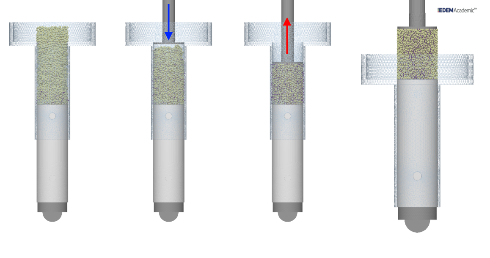
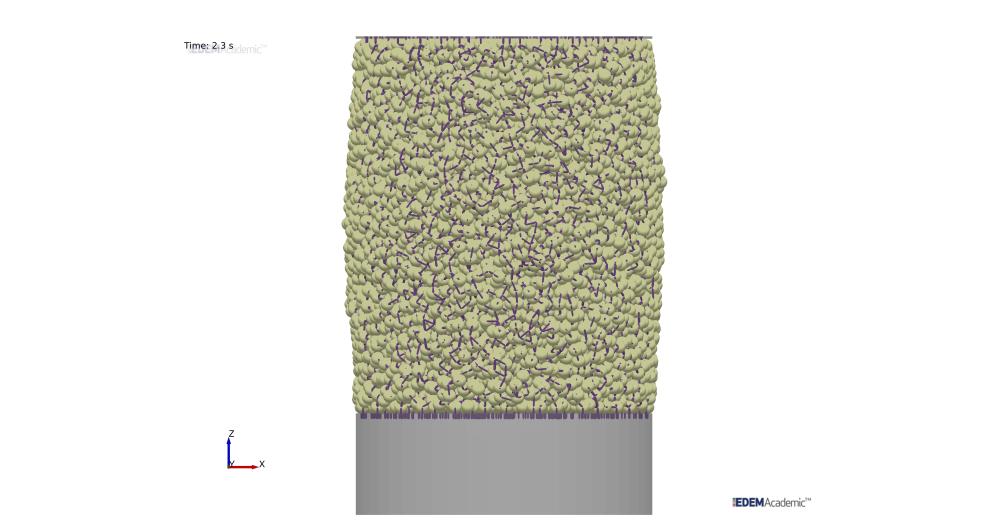
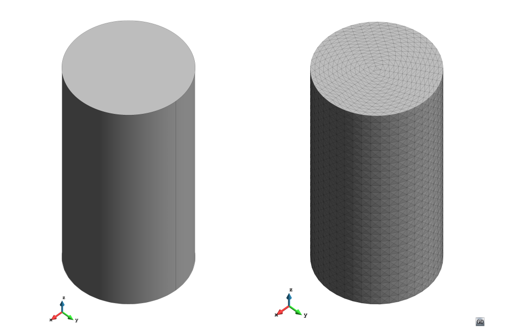
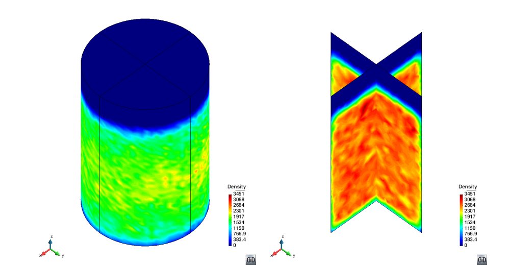
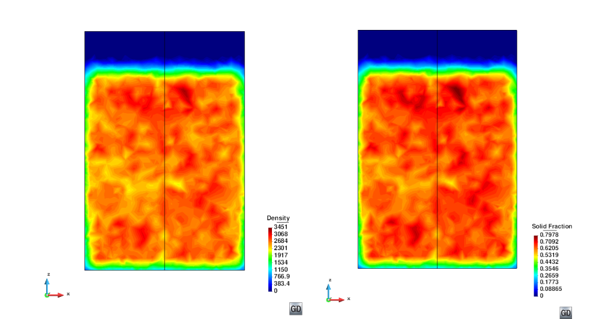
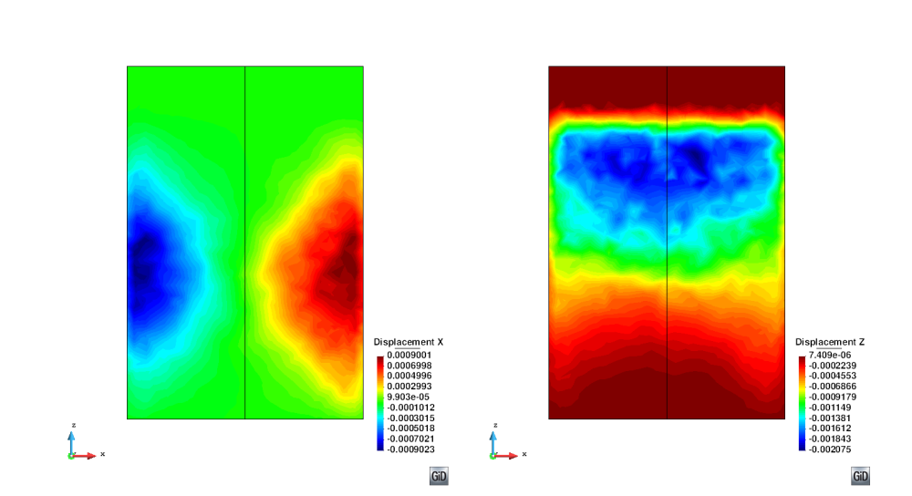
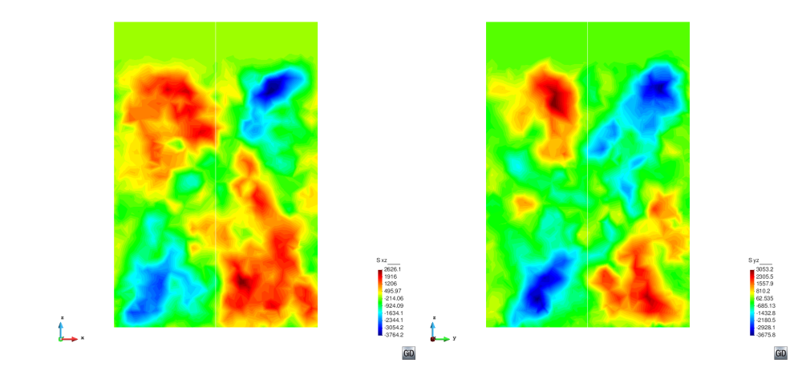
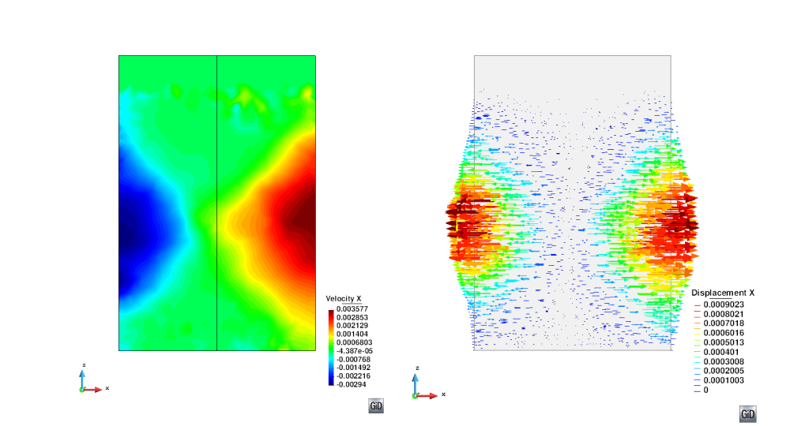
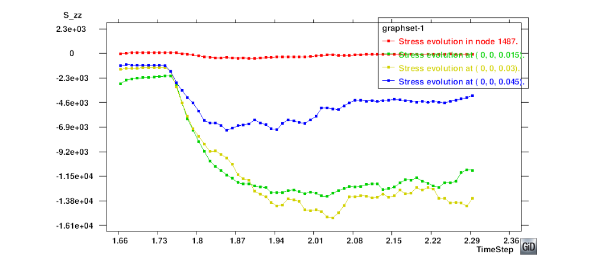
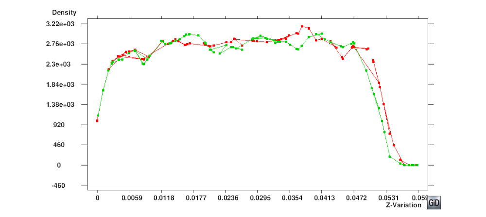

Tutorial 3: Uniaxial Compression Test
Author: John Paul Morrisey
Introduction
The flow behaviour and handling characteristics of cohesive granular solids are strongly dependent on the prior consolidation stress experienced by the solid. This can be assessed by test methods such as shear tester or uniaxial testers. The following tutorial describes the use of Particle-Analytics to analyse a DEM simulation of a uniaxial tester to measure properties such as density, packing fraction and stress and to search for phenomena such as local shear bands.

Figure 1: DEM model of uniaxial test - From left to right: a) filling, b) loading, c) unloading, and d) unconfined compression.
Problem Description The following section introduces a simple problem where a DEM Model (Figure 1) of equal dimensions to the Edinburgh Powder Tester (EPT) which is a semi-automated uniaxial tester. It has been created and simulated within the EDEM simulation software. The three main stages of the experiments are shown from the simulation in Figure 1 and include the filling of sample, the confined compression and the unloading and unconfined compression to failure of a sample. The failed assembly of particles following unconfined compression is shown in Figure 2.
 Figure 2: End of unconfined uniaxial test - Failed assembly of particles
The DEM simulations were carried out using EDEM with a sampling frequency of 1000 Hz. Section 2 gives the salient simulation parameters including particle size, density and domain size. The following example shows the processed results for the unconfined compression only, although the same mesh can be used for both confined and unconfined phases of the simulation.
| Particle info | Value |
|---|---|
| Number of Particles | 10000 |
| Diameter, [mm] | 1 |
| Sphericity | 1.5 |
| Particle Density, ρ [kg/m 3] | 4350 |
| Geometry | Value |
| Cylinder height [m] | 0.08 |
| Cylinder radius [m] | 0.02 |
Table 1: Simulation parameters for DEM uniaxial test
Preparing analysis
Geometry
The simulation domain is recreated in GiD by creating a circular geometry as the base with a radius slightly larger than the cylinder (to account for sample expansion in the unconfined test) with it’s normal in the z direction.
Create a circle by Geometry > Object > Circle and enter the centre point of the
cylinder base (0.0 0.0 0.0). Once the centre is entered the normal direction is defined
in the pop-up box - in this case it is the “Positive Z ”direction. The zoom frame option
can be used to improve visibility and focus on the geometry.
Mesh Generation
As the uniaxial test specimen is cylindrical, a centre structured mesh is best suited.
This mesh is applied from the meshing menu Mesh > Structured > Surfaces > Center Structured.
Set the number of concentric division (in this case 15 division or rings are
used fo creating the mesh - this leads to 45 perimetral divisions) assign to select the
geometry and finish to apply settings to that geometry. Equal sized division are used
and no bias is selected for the mesh (Both Concentric element distribution options are
set to 0.0)
 Figure 3: Initial Pre-processing - Cylinder before and after meshing. Left) Geometry; Right) Structured mesh for post-processing.
Next extrude the cylinder base to form the 3D volume to be used for the mesh: Extrude this in z direction by Utilities > Copy.
From the toolbox select:
- Entities Type: Surfaces
- Transformation: Translation
- First point
(0.0 0.0 0.0)and second point(0.0 0.0 0.08). - Do extrude Volumes
- Select
Once the 3D volume is created, the size of the mesh elements in the vertical direction
is applied to the mesh by Mesh > Structured > Volumes > Assign size setting the
element size to 0.003 (in this case approximately 26 in the vertical direction).
Select the line to assigner the properties to (the vertical edge of the cylinder) and press escape to proceed.
Default mesh elements of tetrahedra are used and the mesh is generated using:
Mesh > Genereate Mesh (or Ctrl-g) > OK > View Mesh.
This should look like Figure 3b
Analysis settings
Standard Particle-Analytics export files are generated for EDEM for both particle and contact data. Additional Angular Velocity Queries (X,Y,Z) are included for the Particles data file. Files are converted from the standard EDEM .csv to the Particle-Analytics format using the EDEM-Particle-Analytics converter as described in Appendix A.
Clicking on the CG preferences button (just below Particle-Analytics symbol) will open the settings toolbox which comprises of 4 sub toolboxes: Main, Input, CG and Input.
Input
PARTICLES FILENAME: Browse to the destination of the converted Particle-Analytics files and select.- Process Contacts File option is checked to allow stress calculations
READING TIME STEPS: A time range ofALLis selected with a step frequency of 1.PARTICLE FILTERS: Fixed Particle System option is checked. Using this option allows the cumulative displacement of particles top be calculated from the initial position of the particles in the analysis.
Time Averaging
- Activate Time Averaging is checked.
TIME AVERAGEis set toFREQUENCY.TIMESTEP FREQUENCYis set to 10.
Spatial Averaging
TYPE: Coarse graining is employed in this example.FUNCTION TYPE: Heaviside.CUTOFF: 0.005.SPATIAL INTEGRAL: No.
Output
GID ASCIIis chosen in this particular example - File can also be read outside GiD.OUTPUT FILE: OTHER.OUTPUT FILENAME: A specific file name chosen.PRINT PARTICLESoption is checked to visualise particles.
Press the ACCEPT button to store the setting for analysis. Start process with the start
process button in the Particle-Analytics toolbar and allow data files to be processed by Particle-Analytics.
Progress can be viewed by selecting the view run info button.
Visualizing results
Once processing is complete click on the post process option in the GiD toolbar and
load the saved *.post.bin file from the post processing tool box. Data will now be
loaded for analysis and visualisation. Results can be visualized by: Go to View Results > Smooth Contour Fill > Required Item.
The data will be initially projected on the outside of the mesh when loaded as in Figure 4a. To view the results at the centre of the assembly cut planes are introduced. Two orthogonal planes are used in this example.
 Figure 4: Meshed geometry and cut planes with results. Left) Processed Assembly; Right) Cut Assembly
To create these planes first switch the view to the xy plane using the List of views option
in the GiD toolbar and select View XY Plane (Original). Next is to create the two cut
planes and this is accomplished by using the 2 Point cut plane tool Do Cuts > Cut Plane > 2 Point
and defining the two points that are used for the cut plane.
In this case the first plane is defined by (-0.025,0) and (0.025,0) and a line will appear across
the circular plan of the assembly.
Repeat for the perpendicular plane with coordinates of (0,-0.025) and (0,0.025).
The outer mesh surface can be switched of using the layer manager and toggling the layer visibility (lightbulb icon). The cut planes should appears similar to Figure 4b.
Further Results can then be visualized for each plane by:
View Results > Smooth Contour Fill > Solid Fraction, Density, Stress, Displacement or Velocity as required.
This will provide time averaged smooth contour plots like in Figures 5 and 8.
Figure 5 shows how the packing of the assembly in terms of both the bulk density and packing fraction. Areas of high solid fraction lead to higher bulk densities.
 Figure 5: Results on Plane XZ - For assessing the packing of the assembly. Left) Density; Right) Solid fraction.
As the assembly contained a fixed number of particles it is possible to recover the cumulative displacements (Figure 6) starting from the first timestep of the processed data file.
 Figure 6: Results on Plane XZ - Cumulative displacements. Left) Displacement X; Right) Displacement Z.
 Figure 7: Shear Stresses - For assessing the failure mode of the assembly. Left) Shear Stress on Plane XZ; Right) Shear Stress on Plane YZ.
Combining the information from both the particle velocities (Figure 8a), shear stresses (Figure 7) and cumulative displacements (Figure 6), it is possible to visualise how the assembly of particles is failing and determine the failure mode - in this case there is shear failure with conjugate shear bands. This is better displayed in Figure 8b where the displacements vectors are plotted to give a representation of the final failed state.
 Figure 8: Results on Plane XZ - Assessing the failure mode. Left) Velocity in horizontal direction; Right) Displacement vectors
It is also possible to plot graphs of the different results. Figure 9 plots the evolution of the vertical stress (Szz) in the assembly at several different heights for the duration of the processed data. This can be used to determine the unconfined yield strength of the sample which will be the peak value, which in this case is approximately 15 kPa at 2.03 sec. The method for plotting the point graph is:
View Results > Graphs > Point evolution > Stress > Szz- Input the coordinate of interest through the command window or by selecting the node on the mesh.
- This generates a graph of stress against time for the selected node.
- Repeat for as many locations as required for the point evolution against time.
 Figure 9: End of unconfined uniaxial test - Failed assembly of particles following unconfined compression
Figure 10 shows how the density variation observed in Figure 5a can be plotted at different timesteps for comparison. The graph also shows a relatively uniform density distribution which does not vary significantly with time during the unconfined com- pression of the sample. Figure 10 is plotted as a line variation in the Z direction:
View Results > Graphs > Line graphs > Set Z axis > Z variation.View Results > Graphs > Line graphs > Density- Input the coordinates of the line through the command window or by selecting the nodes on the mesh. This generates a graph of density variation along this line for a single timestep.
- Repeat for as many timesteps as required to see the variation along nodes at different times.
 Figure 10: End of unconfined uniaxial test - Failed assembly of particles following unconfined compression
Graphs can also be plotted using the graph manager dialog box and further exported for plotting outside of GiD.